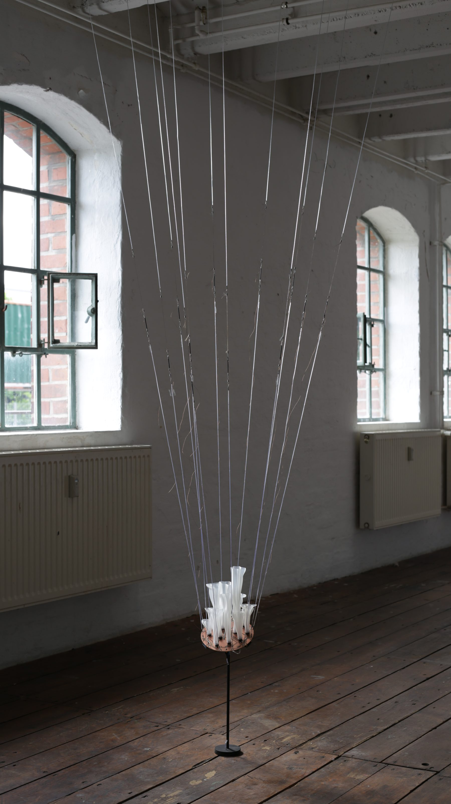
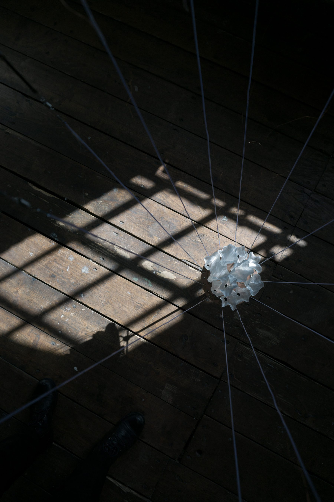
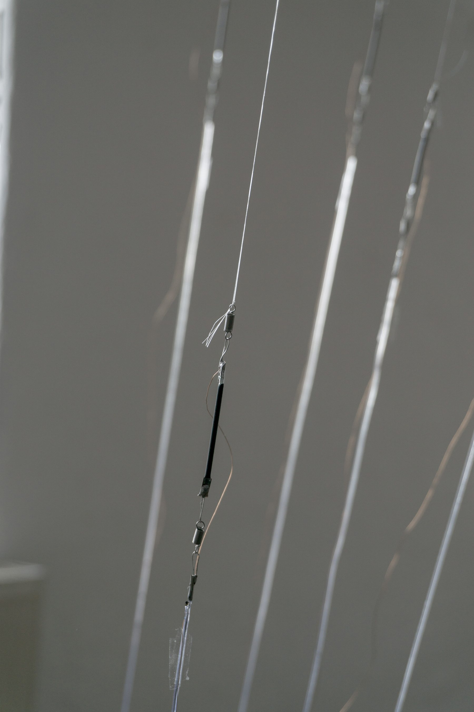
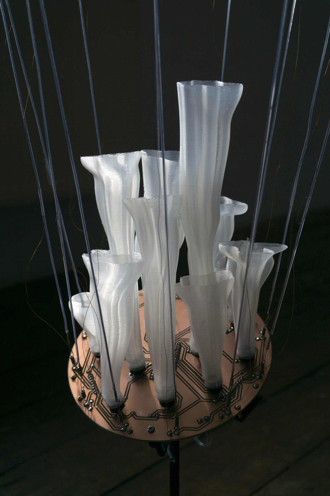

Water in the (h)air is a sound installation that senses the humidity in the air through human hair and interprets it into rhythmic sound. Human and animal hair has historically been used to produce hygrometers. When humidity changes, the length of hair changes accordingly due to its high hygroscopicity. In the installation, diverse human hairs are collected and suspended in the air as humidity sensors. Their subtle changes in length are measured digitally, then further translated to low frequency sound (faster rhythms indicate lower humidity).
Credits: Collaboration with Qianxun Chen
Photo by Daniel Vadazs, Bon Kim
Video by Daniel Vadasz
Video edited by Qianxun Chen
From the class “Scopes of Coexistence”
by Bojana
Exhibitions:
<Scopes of Coexistence>
Galerie Flat
Bremen(de)
2023




Water is the lifeblood of the earth that connects all living things in a delicate web of coexistence. Understanding it means sensing its rhythms in the endless cycle of circulation and striving for balance to ensure the survival of all beings. Water in the (h)air is an attempt to heal the relationship between people, nature, and technology by sensing water in the air through human hair. In a contemporary society with advanced technology, we rely more on accurate digital approaches to ‘read’ the environment, but less on our senses and have become less sensitive to our surroundings. This project aims to use human hair, both as a medium and a metaphor, to reactivate our sensitivity to nature. By closely listening to the rhythmic sound created by the dialogue between the hair, water and the technical objects , we could rediscover our intimate connections to the earth and the delicate web of coexistence that water creates.
{kind=link}